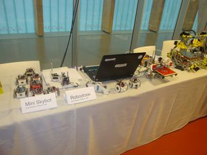
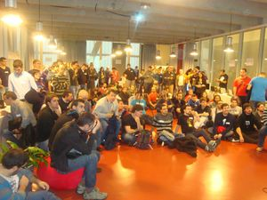
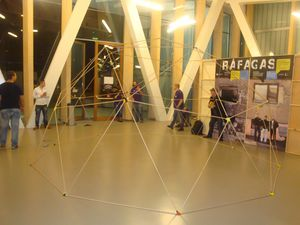
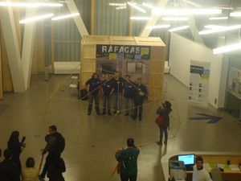

Contenido
[ocultar]Ficha
- Título: Printbots, robots libres e imprimibles
- Evento: OSHWDEM 2012
- Autores: Juan González Gomez, Alberto Valero
- Ponente: Juan González Gomez
- Lugar: Centro Cultural Ágora de A Coruña
- Duración: 10 minutos
- Fecha: 17/Nov/2012
Resumen
Los printbots (PRINTable roBOTS) son robots orientados a la comunidad, que se imprimen mediante una impresora 3D open-source. Se presentan brevemente algunos de los robots creados: Miniskybot 1.0, Miniskybot 2.0, ArduSnake y Robodraw. Los printbots son ideales para educación e investigación.
Descarga
| 2012-11-15-oshwdem-printbots.pdf | Transparencias. En PDF |
| 2012-11-15-oshwdem-printbots.odp | Fuentes de las transparencias,para LibreOffice |
Fotos
| Álbum completo de fotos en Google+ |
|---|
 Ejército de Miniskybots, Robodraw, ArduSnake y la impresora P1 (Click para ampliar) |
 (Click para ampliar)) |
|  (Click para ampliar)) |
 (Click para ampliar)) |


Licencia
| |
Artículos científicos
|
|
|
|
Más información
Sobre impresoras 3D
- RepRap: Impresoras 3D auto-replicantes
- Thingiverse: El youtube de los objetos
- Objetos 3D: Objetos imprimibles
- Proyecto Clone wars: Construye tu propia impresora 3D
- Clon R2D2: El primer clon de Clone-wars
Sobre herramientas libres de diseño
- OpenScad: Herramienta libre para diseño de piezas
- Kicad: Herramienta libre para diseño de circuitos
- Freecad: Herramienta libre de CAD
- OOML: Object Oriented Mechanics. Mecánica orientada a Objetos
Electrónica (hardware libre 2)
- SkyMega: Compatible Arduino
- Escudo para Printbots: Escudo minimalista para hacer printbots con Arduino UNO
- Array de CNY70 para Printbots. Sensores de infrarrojos para los printbots
- PrintShield. Escudo de Arduino para hacer printbots
Sobre printbots
- Mini-Skybot: Robot Miniskybot
- Robodraw
- Orugator
- Unitrack
- 4track
- Scout
- Protobot
- HKTR-9000
- ArduSkybot
- Skyball
- Rover
- D-track
- Mars Rover
- Cuadrúpedo AT-AS
- Brazo robótico de 6 DOF
- Módulos Repy, para construir robots modulares
- ArduSnake: Biblioteca de osciladores para Arduino. ¡¡Mueve serpientes!!
- Water Oscillator: Printbot acuático
Créditos
- Olalla Bravo y Daniel Gómez: robot Orugator
- Jon Goitia: Unitrack, 4track, Rover
- Julián Marín Mato: 4track
- Sliptonic: Scout I y II
- Nieves Cubo: Protobot (ruedas satánicas)
- Carlos García Saura: HKTR-9000 y ArduSkybot
- Miguel Angel de Frutos: Skyball y Water Oscillator
- Daniel González: D-track
- Mario Almagro: Mars Rover y Protobot
- Anita del Prado: Cuadrúpedo AT-AS
- Angel de Castro: Brazo robótico de 6 DOF
Si se me ha olvidado algún crédito, por favor, ponte en contacto conmigo (Obijuan)
Agradecimientos
- A toda la organización de la OSHWdem por invitarme a participar. ¡Muchas gracias!
- A Julio Galarón, por transportarme a mí y mis "bártulos" en su super furgoneta. ¡Muchas gracias!
Noicias
- 22/Nov/2012: Publicada esta página
|
|
Proyecto Clone wars: Construye tu impresora 3D opensource! |
 |
Proyecto RepRap: Impresoras 3D auto-replicantes. El origen de la revolución de las impresoras 3D opensource |
|
|
Obijuan Academy, Tu academia rebelde! ;-) |